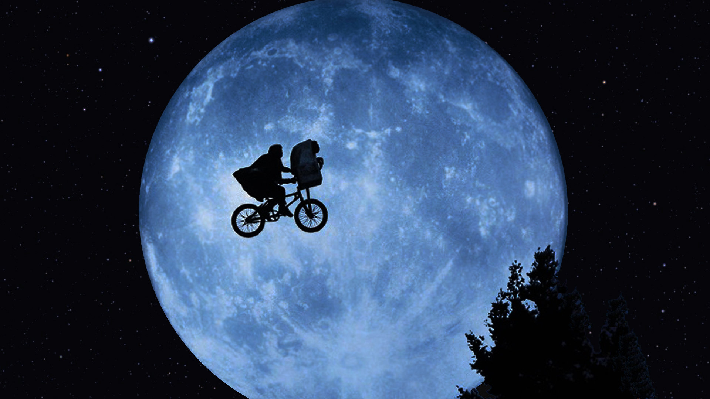
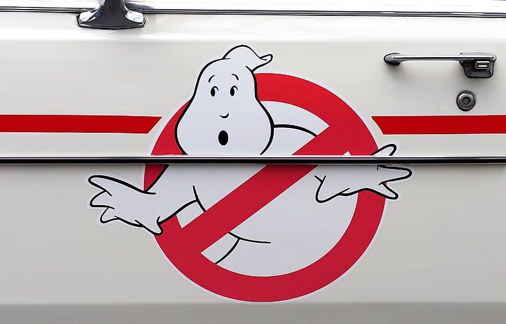
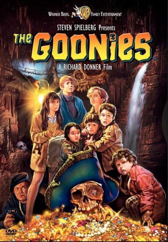

Cinema e TV
Prepare-se para uma emocionante viagem no tempo enquanto exploramos o universo cinematográfico e televisivo que definiu uma era. Navegue pelas obras-primas do cinema, reveja séries icônicas, descubra os bastidores e trilhas sonoras memoráveis que nos transportam de volta a uma época de pura nostalgia. Junte-se a nós nesta jornada para celebrar as décadas que moldaram nossas memórias e continuam a encantar novas gerações.
Anos 80
Filmes
E.T. - O Extraterrestre (1982)
Dirigido por Steven Spielberg, "E.T. - O Extraterrestre" é um marco na história do cinema que encantou e emocionou gerações de espectadores. Este clássico atemporal nos leva a uma emocionante jornada através das lentes de um jovem garoto, Elliott, e seu encontro com um adorável visitante de outro planeta. À medida que uma amizade única e comovente floresce, somos transportados para um mundo de maravilhas, aventuras e, acima de tudo, amor. Prepare-se para relembrar a mágica deste filme que tocou corações e permanece uma obra-prima inesquecível da década de 80.
"E.T. - O Extraterrestre," dirigido por Steven Spielberg e lançado em 1982, é um dos filmes mais queridos e icônicos da história do cinema. O filme mistura elementos de ficção científica, aventura e drama para contar a história emocionante da amizade entre um garoto humano, Elliott, e um visitante de outro planeta, um adorável extraterrestre apelidado de E.T.
Aqui estão alguns pontos-chave sobre o filme "E.T. - O Extraterrestre":
A História: O filme começa quando um grupo de extraterrestres é acidentalmente deixado para trás na Terra por sua nave espacial. Elliott, um garoto solitário que vive com sua mãe e irmãos, faz o primeiro contato com E.T. no quintal de sua casa. Rapidamente, uma ligação emocional única se forma entre Elliott e E.T., com o garoto escondendo o extraterrestre e cuidando dele em segredo.
A Amizade Inesquecível: A amizade entre Elliott e E.T. é o coração do filme. E.T. tem habilidades especiais, como telepatia e cura, e ele e Elliott compartilham uma ligação psíquica profunda. Através de suas aventuras juntos, eles enfrentam desafios e descobrem o poder do amor e da amizade.
Perseguição e Aventura: Quando as autoridades descobrem a existência de E.T., eles o perseguem implacavelmente na tentativa de estudá-lo. A narrativa se transforma em uma emocionante aventura, enquanto Elliott, seus irmãos e seus amigos tentam proteger E.T. e ajudá-lo a retornar para casa.
Tema da Infância e Nostalgia: "E.T. - O Extraterrestre" é profundamente nostálgico e evoca a sensação de infância e maravilha. Ele captura a magia da amizade e a capacidade das crianças de ver o extraordinário no comum.
Impacto Cultural: O filme teve um impacto duradouro na cultura pop e arrecadou inúmeras premiações, incluindo quatro Oscars. Sua trilha sonora emocionante, composta por John Williams, também é amplamente reconhecida.
"E.T. - O Extraterrestre" é uma obra-prima que cativou audiências em todo o mundo. Sua mensagem universal sobre amizade, empatia e a beleza do desconhecido continua a ressoar e encantar gerações de espectadores, tornando-o um clássico intemporal do cinema.
Curiosidade!
Uma curiosidade fascinante sobre o filme "E.T. - O Extraterrestre" está relacionada ao uso da voz para dar vida ao personagem E.T. Durante as filmagens, o diretor Steven Spielberg queria criar uma conexão emocional genuína entre o ator mirim Henry Thomas, que interpretou Elliott, e o extraterrestre. Para alcançar esse objetivo, Spielberg contratou uma atriz anã chamada Pat Welsh, que tinha uma voz rouca e distinta de fumante, para dublar as falas de E.T. Durante as cenas, Pat Welsh estava escondida dentro de um poço especialmente construído no set de filmagem. Ela lia as falas do roteiro em sincronia com a atuação de Henry Thomas, permitindo que a interação entre os personagens fosse mais autêntica. O resultado foi uma voz única e memorável para E.T., que contribuiu significativamente para a emoção e a empatia transmitidas pelo personagem. Mesmo com efeitos especiais avançados disponíveis na época, Spielberg optou por essa abordagem mais artesanal para criar uma conexão mais profunda entre o garoto e o alienígena. O trabalho de Pat Welsh como a voz de E.T. contribuiu para o sucesso do filme e tornou a personagem ainda mais cativante e memorável, proporcionando uma das interpretações de voz mais icônicas da história do cinema.
De Volta para o Futuro (1985)
Enredo: "De Volta para o Futuro" segue a história de Marty McFly (interpretado por Michael J. Fox), um adolescente comum que acidentalmente viaja no tempo após um experimento maluco de seu amigo cientista, o Dr. Emmett Brown (interpretado por Christopher Lloyd). Marty se encontra em 1955, onde conhece uma versão jovem de seus pais e precisa garantir que eles se apaixonem para garantir sua própria existência no futuro. Ao mesmo tempo, ele deve encontrar uma maneira de voltar para casa.
Elementos Memoráveis: O filme é repleto de elementos memoráveis, incluindo o DeLorean DMC-12, que se tornou um ícone da cultura pop, e a trilha sonora incrível, que apresenta a música "The Power of Love" da banda Huey Lewis and the News.
Impacto Cultural: "De Volta para o Futuro" não apenas cativou o público com sua história envolvente, mas também deixou um impacto duradouro na cultura pop. O filme gerou duas sequências igualmente populares, "De Volta para o Futuro II" (1989) e "De Volta para o Futuro III" (1990), completando uma trilogia de viagem no tempo.
Lição de Vida: Além da diversão e aventura, o filme também ensina lições importantes sobre a importância das escolhas que fazemos em nossas vidas e como elas podem afetar nosso futuro.

"De Volta para o Futuro" é um clássico atemporal que continua a encantar as gerações com sua história cativante, personagens memoráveis e o fascinante conceito de viagem no tempo. É um filme que continua sendo amado por sua capacidade de nos fazer sonhar com aventuras e explorar o que aconteceria se pudéssemos realmente voltar ao passado ou viajar para o futuro.
Curiosidade!
originalmente, o ator Michael J. Fox não era a primeira escolha para interpretar o personagem principal, Marty McFly. O ator Eric Stoltz foi inicialmente escalado para o papel e até filmou várias cenas do filme. No entanto, após algumas semanas de filmagem, a equipe de produção e o diretor Robert Zemeckis sentiram que Stoltz não estava trazendo o tipo certo de comédia e energia para o papel.
Como resultado, uma decisão difícil foi tomada para substituir Stoltz por Michael J. Fox, que na época estava ocupado com suas obrigações na série de TV "Family Ties". Spielberg e os produtores da Universal Pictures concordaram em permitir que Fox filmasse "De Volta para o Futuro" durante a noite após suas gravações na série de TV.
A mudança de ator foi um grande sucesso, e Michael J. Fox trouxe uma qualidade única de carisma e comédia ao papel de Marty McFly, tornando-o um dos personagens mais queridos da história do cinema. A decisão de fazer essa troca de atores se mostrou crucial para o sucesso do filme e para sua posição como um clássico dos anos 80.
Os Caça-Fantasmas (1984)
Enredo: "Os Caça-Fantasmas" segue um grupo de parapsicólogos desajustados que decidem abrir um negócio peculiar: caçar e capturar fantasmas em Nova York. O grupo é composto por Peter Venkman (Bill Murray), Ray Stantz (Dan Aykroyd), Egon Spengler (Harold Ramis) e Winston Zeddemore (Ernie Hudson). Eles se tornam os "Caça-Fantasmas" e enfrentam uma crescente ameaça paranormal na cidade, incluindo o icônico vilão, o demônio Gozer.
Elementos Memoráveis: O filme é repleto de momentos memoráveis, incluindo os uniformes dos Caça-Fantasmas, o icônico carro Ecto-1 e a música tema contagiante de Ray Parker Jr., que ficou famosa com a frase "Who you gonna call? Ghostbusters!" ("Quem vocês vão chamar? Os Caça-Fantasmas!").
Humor e Efeitos Especiais: "Os Caça-Fantasmas" é conhecido por seu humor inteligente e diálogos engraçados, especialmente graças ao talento cômico de Bill Murray. Além disso, os efeitos especiais da época, incluindo os fantasmas e a sequência final com Gozer, eram inovadores e continuam a ser apreciados.
Cultura Pop: O filme gerou uma franquia de mídia expandida, incluindo sequências, desenhos animados, jogos e até mesmo um remake em 2016. Os Caça-Fantasmas se tornaram ícones da cultura pop, e o logotipo do fantasminha com uma barra vermelha diagonal é instantaneamente reconhecível.
Legado Duradouro: "Os Caça-Fantasmas" deixou um legado duradouro na cultura pop e continua a ser amado por fãs de todas as idades. A combinação única de comédia, ação e elementos sobrenaturais o tornou um clássico atemporal.
O filme "Os Caça-Fantasmas" é uma mistura perfeita de humor, aventura e elementos sobrenaturais que o tornam uma parte essencial da década de 1980 e da cultura pop em geral. É um filme que permanece tão divertido e cativante hoje quanto era quando foi lançado.
Curiosidade!
originalmente, o filme foi concebido com um cenário muito diferente do que vemos nas versões finais. A ideia inicial era situar a história em um futuro distópico, em que os Caça-Fantasmas eram mais parecidos com guerreiros interdimensionais, usando uniformes e armaduras futuristas.
Os escritores Dan Aykroyd e Harold Ramis, que co-escreveram o roteiro, tinham uma visão muito ambiciosa do filme, que teria um orçamento muito mais alto. No entanto, quando o estúdio Columbia Pictures aprovou o filme, eles pediram que o orçamento fosse reduzido e o cenário futurista fosse alterado para a Nova York contemporânea.
Essa mudança forçou os roteiristas a adaptar a história, tornando-a mais acessível e enraizada na realidade, mas mantendo a mistura única de comédia e sobrenatural que se tornou a marca registrada do filme. A decisão de mudar para uma configuração mais urbana e contemporânea acabou contribuindo para o charme especial do filme, fazendo com que os Caça-Fantasmas se tornassem heróis improváveis em um mundo cheio de fenômenos paranormais em Nova York. Essa curiosidade destaca como a criatividade pode prosperar mesmo diante de desafios orçamentários e de produção.
Blade Runner (1982)
Enredo: "Blade Runner" se passa em um futuro distante, em uma cidade futurista decadente de Los Angeles. O filme segue Rick Deckard (interpretado por Harrison Ford), um ex-policial chamado de volta à ativa para caçar e "aposentar" replicantes, androides geneticamente modificados que se assemelham a seres humanos. A história levanta questões profundas sobre identidade, humanidade e o que significa ser "real."
Estética Visual: O filme é famoso por sua estética visual deslumbrante e influente, criando a visão distópica de uma cidade chuvosa e neon. A cinematografia de Roger Deakins e os cenários de produção meticulosamente detalhados definiram o padrão para filmes futuristas.
Trilha Sonora: A trilha sonora eletrônica e atmosférica de Vangelis contribuiu significativamente para a atmosfera única do filme, tornando-se uma parte essencial de sua identidade.
Versões do Diretor: "Blade Runner" é notório por suas várias versões, incluindo a versão original do diretor, versões de estúdio e a versão final do diretor, cada uma com diferenças sutis na narrativa e no final do filme. Isso gerou debates e discussões entre os fãs sobre a interpretação do filme.
Legado: "Blade Runner" influenciou profundamente o gênero de ficção científica e continua a ser uma referência na cultura pop. Sua exploração de temas filosóficos e visuais impressionantes o tornam um filme que vale a pena revisitar e discutir.
"Blade Runner" é um filme que desafia as convenções de ficção científica, explorando questões existenciais e morais enquanto cria um mundo visualmente deslumbrante. Ele representa uma parte importante do cenário cinematográfico dos anos 80 e continua a ser uma obra-prima apreciada na história do cinema.
Curiosidade!
o filme foi originalmente um fracasso nas bilheteiras e nas críticas quando foi lançado em 1982. Embora tenha se tornado um clássico cult nos anos seguintes, sua recepção inicial foi desanimadora.
O público e os críticos na época não estavam preparados para a visão distópica sombria e complexa apresentada por Ridley Scott. Muitos esperavam um filme de ação convencional de ficção científica, enquanto "Blade Runner" ofereceu uma narrativa lenta e contemplativa, repleta de questões filosóficas sobre a natureza da humanidade.
No entanto, à medida que os anos passaram, o filme ganhou uma base de fãs dedicada e críticos reavaliaram sua importância. As edições subsequentes, como a "Versão do Diretor" e a "Versão Final do Diretor", ajudaram a esclarecer a visão de Ridley Scott e a expandir o apelo do filme. "Blade Runner" eventualmente se tornou uma obra-prima reverenciada e influente da ficção científica e da cultura pop, provando que a recepção inicial nem sempre determina o valor duradouro de um filme.
Os Goonies (1985)
Enredo: "Os Goonies" segue um grupo de crianças adolescentes que vivem na cidade costeira de Astoria, Oregon. Quando descobrem um mapa do tesouro no sótão de um dos garotos, eles embarcam em uma jornada emocionante para encontrar o tesouro do pirata Willy Caolho e salvar suas casas de serem demolidas por desenvolvedores imobiliários.
Personagens Memoráveis: O filme apresenta um elenco de personagens memoráveis, incluindo Mikey (interpretado por Sean Astin), Chunk (Jeff Cohen), Data (Jonathan Ke Quan), Mouth (Corey Feldman) e Sloth (John Matuszak), entre outros. Cada personagem tem sua própria personalidade única, contribuindo para a diversão e aventura do filme.
Aventura e Mistério: "Os Goonies" é uma aventura cheia de reviravoltas emocionantes, armadilhas mortais e enigmas a serem resolvidos. A busca pelo tesouro é repleta de momentos de suspense e comédia.
Nostalgia: O filme captura a sensação da infância e da amizade, tornando-o um favorito entre aqueles que cresceram nos anos 80. Ele evoca uma forte sensação de nostalgia e é lembrado com carinho por várias gerações.
Legado Duradouro: "Os Goonies" deixou um legado duradouro na cultura pop, inspirando muitos a abraçar a aventura e a amizade. Até hoje, os fãs celebram o filme e aguardam com ansiedade qualquer notícia sobre uma possível sequência.
"Os Goonies" é um filme atemporal que celebra a imaginação, a amizade e a busca por aventuras. É uma lembrança adorável dos anos 80 e continua a encantar públicos de todas as idades com sua história envolvente e personagens cativantes.
curiosidade!
Durante uma cena em que o personagem Mikey (interpretado por Sean Astin) toca uma série de notas no órgão de tubos em uma casa abandonada, a música que ele toca é na verdade a sequência das primeiras notas da trilha sonora do filme "Tubarão" de Steven Spielberg, composta por John Williams. Esta é uma referência humorística e nostálgica a Spielberg, que também era um dos produtores executivos de "Os Goonies". A inclusão dessa melodia icônica acrescenta um toque especial de diversão e reconhecimento para os fãs de cinema que conhecem a música de "Tubarão".